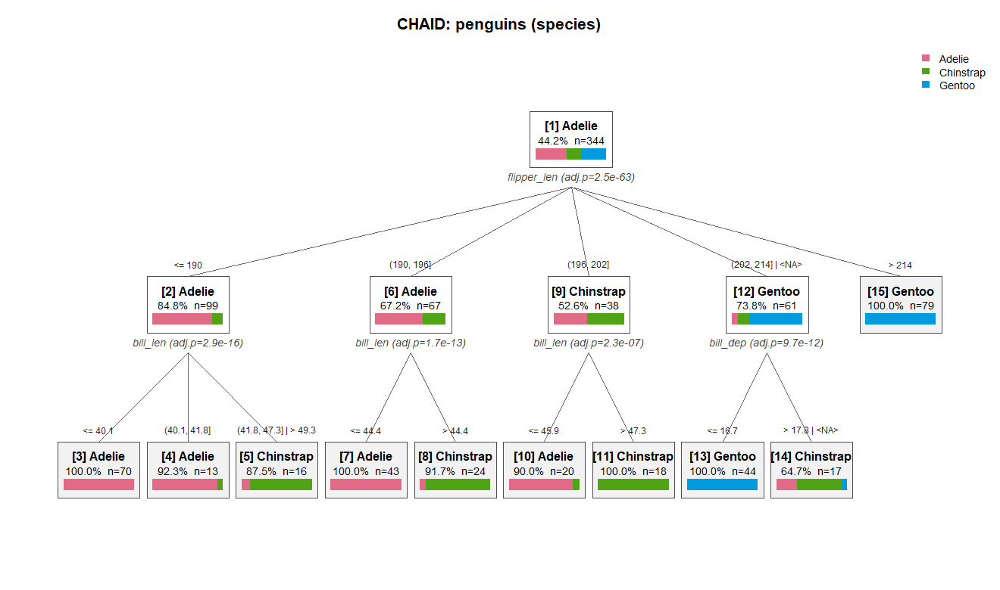

chaidr は、CHAID（Chi-squared Automatic Interaction Detection）および Exhaustive CHAID 決定木アルゴリズムの base R 実装です。IBM SPSS Statistics Algorithms ドキュメントの仕様（Kass 1980; Biggs, de Ville, and Suen 1991）に 準拠しています。学習・予測のコアは base R のみで動作し、可視化バックエンドと ‘partykit’ 連携はオプションのソフト依存です。
English version: README.md
特徴
- 多岐分割による標準 CHAID と Exhaustive CHAID の木構築。
- 予測変数: 名義、順序（欠損値の floating カテゴリ対応）、連続 （分位ビンへ自動離散化）。
- 目的変数: 名義（Pearson カイ二乗検定）、順序（Goodman row-effects モデル）、連続（一元配置 ANOVA F 検定）。
-
freqによる頻度重み。集計済みデータでも個票と同じ結果を再現。 -
predict()によるクラス・クラス確率・所属ノードの予測。 - モデル検査: ノード表（
chaid_table()）、決定ルール （chaid_rules()）、予測変数重要度（chaid_importance()）。 - 評価: ゲイン・リフト分析（
chaid_gains()）とホールドアウトデータでの 検証（chaid_validate()）。 - 可視化: base graphics の
plot()、‘Graphviz’ DOT 出力 （chaid_dot()、chaid_graphviz()）、‘plotly’ による対話的な木 （chaid_plotly()）、‘partykit’ オブジェクトへの変換 （chaid_as_party()）。
CHAID の使い道
予測精度だけが目的なら、‘XGBoost’ や ‘LightGBM’ といった現代の勾配 ブースティング系の手法のほうが一般に高性能です。CHAID の強みは別の ところにあります — 分析結果の解釈性、意思決定への直結、そしてすべての 分岐に統計的根拠があることです。CHAID はブラックボックスではなく、 各分岐が有意性検定に裏付けられた単一の多分岐木を構築します。コンサル ティングやマーケティングの現場で、CHAID が今なお非常に強力な選択肢で あり続けている理由がここにあります。
典型的な用途:
- アンケート分析・顧客満足度（CS）調査・市場調査
- マーケティングのセグメンテーション（ターゲット選定）
- 説明責任（Accountability）が強く求められる領域
- 探索的データ分析（EDA）の初期段階
インストール
CRAN 公開後はリリース版をインストールできます。
install.packages("chaidr")それまでは、GitHub から開発版を インストールできます。
# install.packages("remotes")
remotes::install_github("morimotoosamu/chaidr")クイックスタート
penguins データセット（R >= 4.5 に同梱）は連続予測変数と欠損値を 含んでおり、どちらも CHAID がそのまま扱えます。
library(chaidr)
data(penguins)
fit <- chaid(species ~ ., data = penguins,
control = chaid_control(min_parent = 30, min_child = 10))
print(fit)
#> CHAID decision tree (method = "chaid")
#> Response: species (categorical)
#> Valid cases: 344 (data: 344 rows)
#>
#> [1] root: Adelie (44.2%), n=344 | split: flipper_len (adj.p=2.48e-63, chi2=328.5, B=714)
#> [2] flipper_len in {<= 190}: Adelie (84.8%), n=99 | split: bill_len (adj.p=2.92e-16, chi2=78.21, B=28)
#> [3] bill_len in {<= 40.1}: Adelie (100.0%), n=70 *
#> [4] bill_len in {(40.1, 41.8]}: Adelie (92.3%), n=13 *
#> [5] bill_len in {(41.8, 47.3] | > 49.3}: Chinstrap (87.5%), n=16 *
#> [6] flipper_len in {(190, 196]}: Adelie (67.2%), n=67 | split: bill_len (adj.p=1.66e-13, chi2=58.69, B=9)
#> [7] bill_len in {<= 44.4}: Adelie (100.0%), n=43 *
#> [8] bill_len in {> 44.4}: Chinstrap (91.7%), n=24 *
#> [9] flipper_len in {(196, 202]}: Chinstrap (52.6%), n=38 | split: bill_len (adj.p=2.31e-07, chi2=30.78, B=8)
#> [10] bill_len in {<= 45.9}: Adelie (90.0%), n=20 *
#> [11] bill_len in {> 47.3}: Chinstrap (100.0%), n=18 *
#> [12] flipper_len in {(202, 214] | <NA>}: Gentoo (73.8%), n=61 | split: bill_dep (adj.p=9.69e-12, chi2=56.14, B=15)
#> [13] bill_dep in {<= 16.7}: Gentoo (100.0%), n=44 *
#> [14] bill_dep in {> 17.8 | <NA>}: Chinstrap (64.7%), n=17 *
#> [15] flipper_len in {> 214}: Gentoo (100.0%), n=79 *flipper_len のような連続予測変数は、木構築の前に分位ビンへ離散化され、 統計的に類似したビン同士が再統合されて多岐分割になります。<NA> を含む グループは、欠損値が floating カテゴリとして統合された先を示します。 末端ノードには * が付きます。
同じ木は base graphics でプロットできます（ノード内の帯は各ノードの クラス分布）。
plot(fit, main = "CHAID: penguins (species)")
予測は標準の S3 predict() インターフェースで行います。
pred <- predict(fit, penguins) # クラスラベル（factor）
mean(pred == penguins$species) # 訓練データ精度
#> [1] 0.9622093
round(predict(fit, head(penguins, 3), type = "prob"), 3)
#> Adelie Chinstrap Gentoo
#> [1,] 1 0 0
#> [2,] 1 0 0
#> [3,] 1 0 0全末端ノードの決定ルール:
chaid_rules(fit)
#> node
#> 1 3
#> 2 4
#> 3 5
#> 4 7
#> 5 8
#> 6 10
#> 7 11
#> 8 13
#> 9 14
#> 10 15
#> rule
#> 1 bill_len <= 40.1 and flipper_len <= 190
#> 2 bill_len in (40.1, 41.8] and flipper_len <= 190
#> 3 (bill_len in (41.8, 47.3] or bill_len > 49.3) and flipper_len <= 190
#> 4 bill_len <= 44.4 and flipper_len in (190, 196]
#> 5 bill_len > 44.4 and flipper_len in (190, 196]
#> 6 bill_len <= 45.9 and flipper_len in (196, 202]
#> 7 bill_len > 47.3 and flipper_len in (196, 202]
#> 8 bill_dep <= 16.7 and (flipper_len in (202, 214] or flipper_len is missing)
#> 9 (bill_dep > 17.8 or bill_dep is missing) and (flipper_len in (202, 214] or flipper_len is missing)
#> 10 flipper_len > 214主要関数
| タスク | 関数 |
|---|---|
| モデル学習 |
chaid()、chaid_control()
|
| 予測 | predict() |
| 検査 |
print()、summary()、chaid_table()、chaid_rules()、chaid_importance()
|
| 評価 |
chaid_gains()、chaid_validate()
|
| 可視化 |
plot()、chaid_dot()、chaid_graphviz()、chaid_plotly()
|
| partykit 連携 | chaid_as_party() |
ドキュメント
-
vignette("chaidr")– 英語の入門編。 -
vignette("chaidr-ja")– アルゴリズム・全オプション設定・評価・ 可視化を網羅した詳細チュートリアル（日本語）。
参考文献
- Kass, G. V. (1980). An exploratory technique for investigating large quantities of categorical data. Applied Statistics, 29(2), 119–127.
- Biggs, D., de Ville, B., & Suen, E. (1991). A method of choosing multiway partitions for classification and decision trees. Journal of Applied Statistics, 18(1), 49–62.
- IBM Corp. IBM SPSS Statistics Algorithms – “CHAID and Exhaustive CHAID Algorithms”.